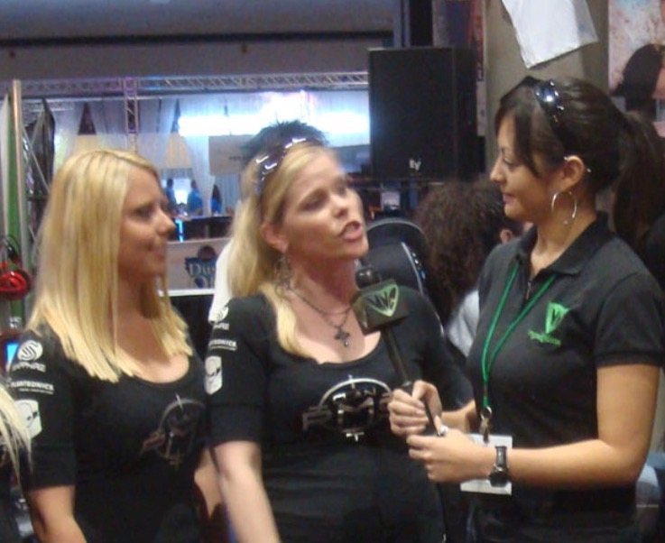

Quick, candid interviews outside your event — powered by AI that turns real voices into evidence you can act on.
Get a DemoBy the time the email lands, the moment has passed. You get polite answers, not honest ones.
Attendees tell organizers what they want to hear. A neutral 3rd party unlocks candor.
Without structured qualitative data, programming decisions are based on assumptions, not evidence.
1-2 min interviews during breaks. A neutral interviewer asks smart, AI-guided questions. Audio or video recorded.
UpSight transcribes, identifies speakers, and extracts evidence — quotes you can trace back to the source.
Themes emerge across conversations. See exactly who said what, and use real voices to shape future programming.

Come for the vibe. Leave with momentum.
A Day of Party, Progress & Purpose.
A neutral 3rd-party interviewer captures candid perspectives your team would never hear directly.
Every recorded interview doubles as potential programming testimonials and social content for future events.
AI clusters feedback into themes — quickly identify gaps in programming, inclusivity, or attendee experience.
Click any insight and see the exact quote, speaker, and timestamp. Evidence your stakeholders can trust.
getupsight.com — From conversation to conviction.